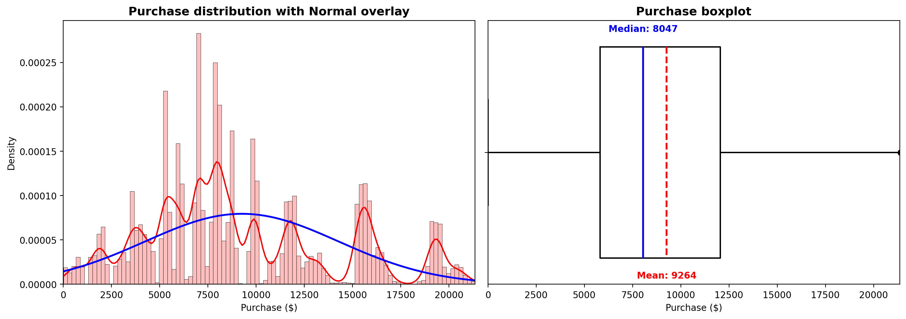
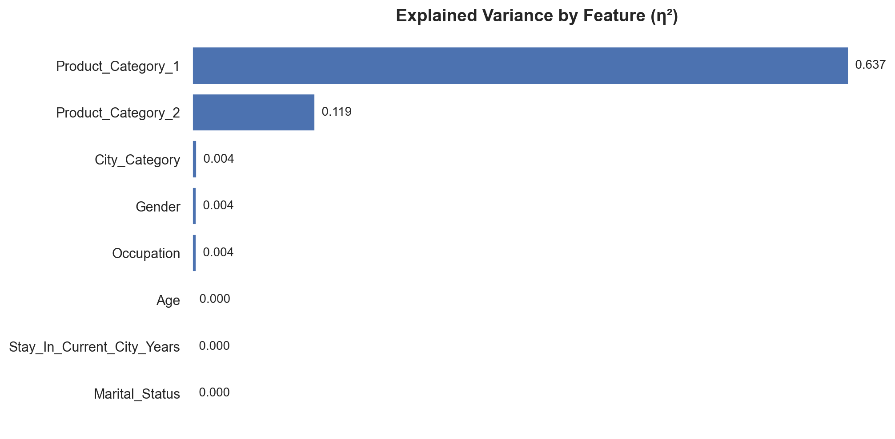
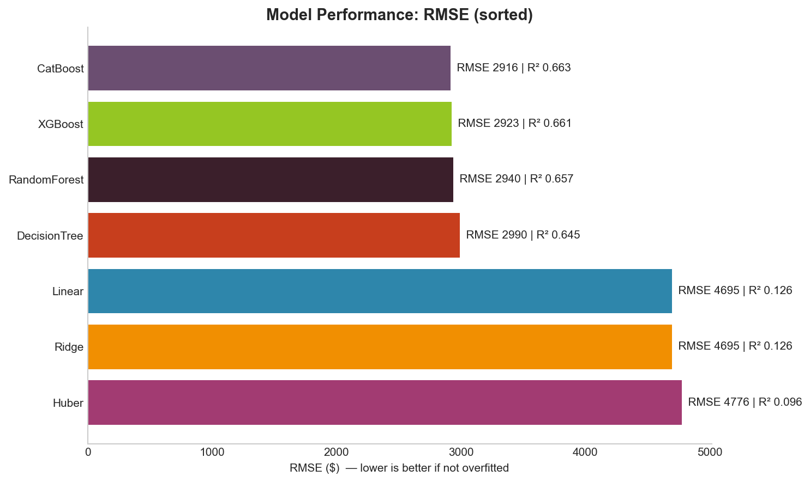
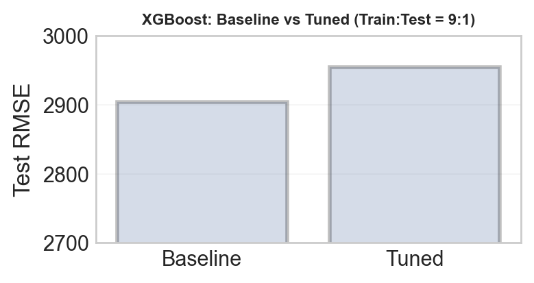
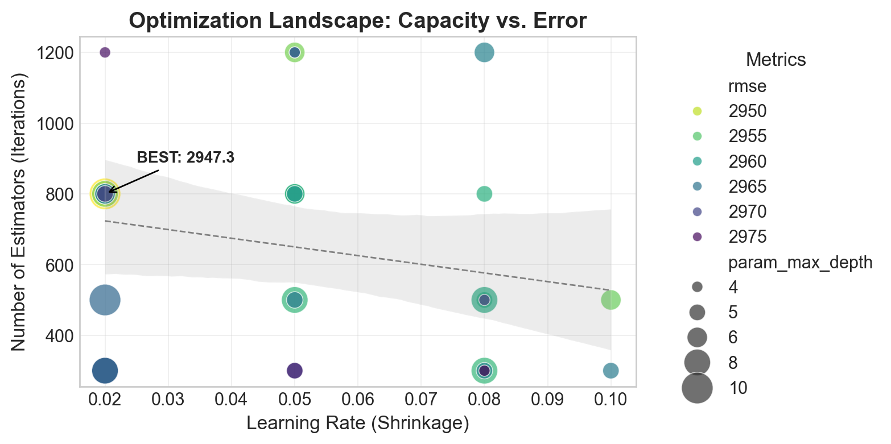

<div id="ajax-page" class="ajax-page-content">
  <div class="ajax-page-wrapper">
    <div class="ajax-page-nav">
      <div class="nav-item ajax-page-prev-next">
        <a class="ajax-page-load" href="#"><i class="lnr lnr-chevron-left"></i></a>
        <a class="ajax-page-load" href="#"><i class="lnr lnr-chevron-right"></i></a>
      </div>
      <div class="nav-item ajax-page-close-button">
        <a id="ajax-page-close-button" href="#"><i class="lnr lnr-cross"></i></a>
      </div>
    </div>

    <div class="ajax-page-title">
      <h1>Black Friday Sales Prediction</h1>
    </div>

    <div class="row">
      <div class="col-sm-12 col-md-12 portfolio-block">

        <p style="text-align: center; margin: 10px 0 30px 0; line-height: 1.9;">
          I built this project to answer a deceptively simple question: can we predict how much a customer will spend on Black Friday
          using only their demographics and product categories — and then turn the model’s behavior into marketing decisions that make sense to humans?
        </p>

        <hr style="border: none; border-top: 1px solid #eee; margin: 35px 0;">

        <h3 style="margin-bottom: 20px;">Goal</h3>
        <p style="text-align: justify; line-height: 1.8; margin-bottom: 18px;">
          The target is the purchase amount, and the input space is classic “high-cardinality retail”: product categories, city labels,
          and demographic buckets. The objective was not just to get a low error number, but to learn what actually drives spending —
          so the final output reads like a story: what matters, what barely matters, and where a business should focus attention.
        </p>

        <h3 style="margin: 35px 0 20px 0;">Data cleaning + EDA</h3>
        <p style="text-align: justify; line-height: 1.8; margin-bottom: 18px;">
          Before modeling, I handled missing category fields, standardized categorical encoding, and sanity-checked the target distribution.
          Two quick plots changed how I thought about the problem: the purchase distribution makes it clear this is a heavy-tailed target,
          and the explained-variance view shows that product categories dominate what can be “explained” at all.
        </p>

        <!-- EDA images side-by-side -->
        <div style="display: flex; gap: 18px; flex-wrap: wrap; justify-content: center; margin: 25px 0 10px;">
          <div style="flex: 1 1 380px; max-width: 420px;">
            
            <p style="text-align: center; color: #666; font-size: 0.9em; margin-top: 10px; line-height: 1.6;">
              Purchases are strongly right-skewed with a heavy tail — extreme spenders matter, and “normal error” assumptions are fragile.
            </p>
          </div>

          <div style="flex: 1 1 380px; max-width: 420px;">
            
            <p style="text-align: center; color: #666; font-size: 0.9em; margin-top: 10px; line-height: 1.6;">
              Most explainable variance comes from Product_Category_1 (and then Product_Category_2); demographics are weaker alone.
            </p>
          </div>
        </div>

        <p style="text-align: justify; line-height: 1.8; margin-top: 18px; margin-bottom: 18px;">
          The business-facing signals are surprisingly crisp. The volume is dominated by males aged 26–35, so even small conversion
          improvements there move revenue materially. City B wins on transaction count while City C wins on average purchase, which suggests
          a “volume vs value” split strategy. New residents show a distinct spending pattern that can be used for segmentation, while marital status
          barely moves the needle — a useful reminder that not every demographic field is worth building campaigns around.
        </p>

        <hr style="border: none; border-top: 1px solid #eee; margin: 35px 0;">

        <h3 style="margin-bottom: 20px;">Modeling</h3>
        <p style="text-align: justify; line-height: 1.8; margin-bottom: 18px;">
          I trained linear baselines (Linear, Ridge, Huber) and non-linear models (Decision Tree, Random Forest, XGBoost, CatBoost),
          evaluating with RMSE and R² on a held-out test split. The pattern is the point: linear models underfit because spending behavior
          is interaction-heavy, while tree ensembles win by learning non-linearities and feature interactions without hand-crafted feature engineering.
        </p>

        <div style="text-align: center; margin: 25px 0 10px;">
          
          <p style="text-align: center; color: #666; font-size: 0.9em; margin-top: 10px; line-height: 1.6;">
            RMSE ranking makes the story obvious: ensembles cluster near the top; linear baselines lag behind.
          </p>
        </div>

        <p style="text-align: justify; line-height: 1.8; margin-top: 18px; margin-bottom: 18px;">
          What I like here is how “modern tabular ML” behaves when the data has a few dominant categorical drivers: multiple strong tree-based models
          end up with similar performance because they’re all capturing the same underlying structure; after that, improvements tend to be about optimization details,
          not a totally different understanding of the data. :contentReference[oaicite:3]{index=3}
        </p>

        <h3 style="margin: 35px 0 20px 0;">Hyperparameter tuning</h3>
        <p style="text-align: justify; line-height: 1.8; margin-bottom: 18px;">
          I ran a randomized hyperparameter search for XGBoost and refit the best configuration. The tuned model improves only marginally,
          which is statistically honest and also useful: it suggests the ceiling is more “feature-limited” than “tuning-limited.”
        </p>

        <!-- Tuning images side-by-side -->
        <div style="display: flex; gap: 18px; flex-wrap: wrap; justify-content: center; margin: 25px 0 10px;">
          <div style="flex: 1 1 380px; max-width: 420px;">
            
          </div>

          <div style="flex: 1 1 380px; max-width: 420px;">
            
          </div>
        </div>

        <p style="text-align: justify; line-height: 1.8; margin-top: 18px; margin-bottom: 18px;">
          Two reasons this outcome makes sense: first, the dataset’s predictive signal is dominated by a few strong categorical drivers,
          so once the model is in the right regime, hyperparameters only fine-tune around that signal. Second, beyond a point,
          gains are often within split-to-split variability; the next real jump usually comes from new features or a different target treatment
          rather than squeezing the last drop out of tuning. :contentReference[oaicite:4]{index=4}
        </p>

        <hr style="border: none; border-top: 1px solid #eee; margin: 35px 0;">

        <h3 style="margin-bottom: 20px;">Closing thought</h3>
        <p style="text-align: justify; line-height: 1.8; margin-bottom: 18px;">
          I like this project for a personal reason: I always wondered who really shops on Black Friday, because the “deals” don’t always feel that cheap.
          I expected one story and the data told me another — especially around who spends more. That small moment of having my assumptions corrected
          is exactly why I enjoy data-informed work: it’s not just prediction, it’s a quiet fact-check on what we think we know.
        </p>

        <hr style="border: none; border-top: 1px solid #eee; margin: 35px 0;">

        <h3 style="margin-bottom: 20px;">Project Details</h3>
        <p style="line-height: 1.8; margin-bottom: 12px;">
          <span style="color: #666;">Author:</span> Sajal Gupta
        </p>
        <p style="line-height: 1.8; margin-bottom: 12px;">
                    <span style="color: #666;">Year:</span> 2024
                </p>
        <p style="line-height: 1.8; margin-bottom: 12px;">
          <span style="color: #666;">Category:</span> DS/ML
        </p>
        <p style="line-height: 1.8; margin-bottom: 12px;">
          <span style="color: #666;">Tech:</span> Python, Pandas, NumPy, scikit-learn, XGBoost, Random Forest, Matplotlib
        </p>
        <p style="line-height: 1.8; margin-bottom: 25px;">
          <span style="color: #666;">Focus:</span> High-cardinality tabular regression, model comparison (linear vs ensembles), interpretable insights for business segmentation, and disciplined tuning/diagnostics.
        </p>

        <div style="margin-top: 30px;">
          <a href="https://github.com/sajalgupta0422/Black_Friday_Sales_Prediction" target="_blank" style="display: inline-block; padding: 12px 28px; background: #8b7355; color: white; text-decoration: none; border-radius: 4px; font-size: 0.95em;">
            <i class="fab fa-github"></i> &nbsp;View Source Code
          </a>
        </div>

      </div>
    </div>
  </div>
</div>
<!-- End of Path: portfolio-black-friday.html -->